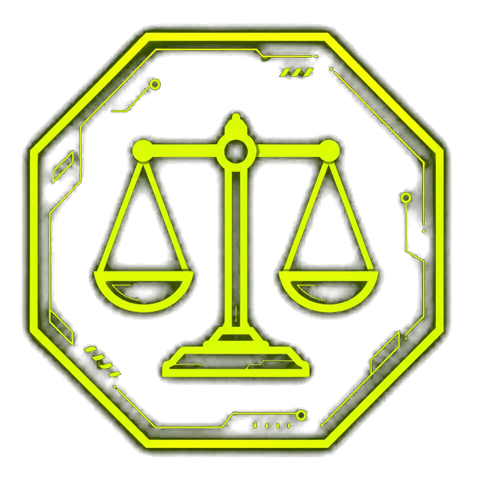

Grupo 1
Área Criminal
- In dubio pro MP Campeões do grupo · 2 jogadores
- Filósofos do Direito Penal 2º lugar · 3 jogadores
- ProgAmadores 3º lugar · 3 jogadores
- Progressão dos Prompts 3º lugar · 4 jogadores
- Dominus Lex 4 jogadores
- Equipe na hora 4 jogadores
- Atlas 4 jogadores
- Ocultas 3 jogadoras